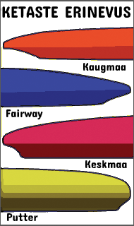
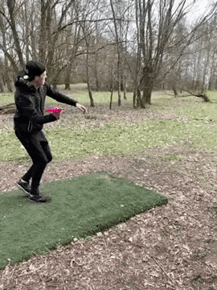

Disc golfi kettad

Discgolfi varustuse kõige olulisemaks elemendiks on discgolfi ketas
Kasutatakse kolme tüüpi kettaid
Driver
Driver ehk kaugmaaketas on pikima lennuga ketas. Kaugmaaketta tunneb ära selle terava serva järgi. Kaugmaakettaid kasutatakse pikkadeks viseteks korvi suunas ja nende täpsus ei pruugi olla kõige suurem. Driverid jagunevad omakorda kaheks
Distance driver
Lendab kaugemale, aga ebatäpsemFairway driver
Aeglasem, täpsem
Midrange
Midrange ehk keskmaaketas korvile kontrollitud lähenemiste sooritamiseks. See on suurema täpsusega kui kaugmaaketas, kuid ei lenda tömbima serva tõttu nii kaugele.Putter
 Putter ehk lähimaaketas on mõeldud peamiselt korvi viskamiseks. Putter on ümara servaga ega lenda kaugele,
kuid on seevastu suure täpsusega.
Putter ehk lähimaaketas on mõeldud peamiselt korvi viskamiseks. Putter on ümara servaga ega lenda kaugele,
kuid on seevastu suure täpsusega.